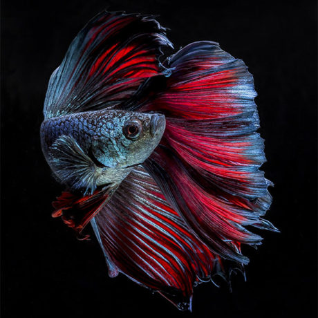
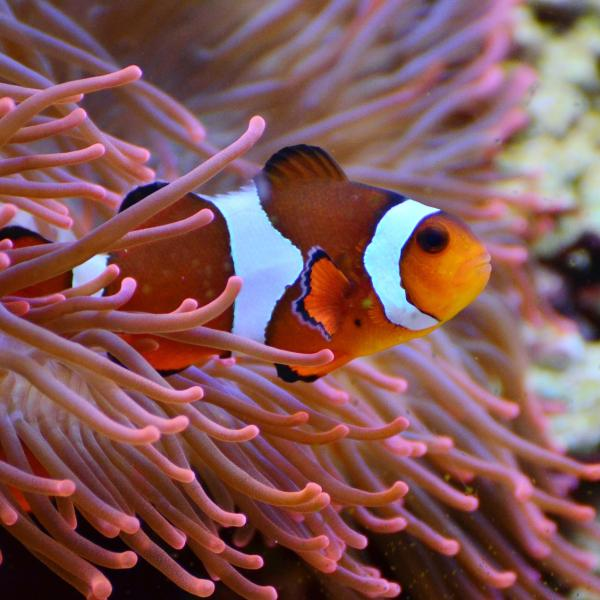
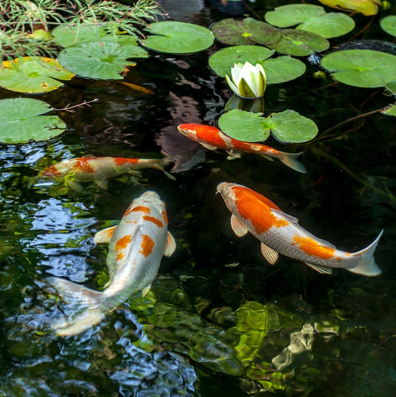
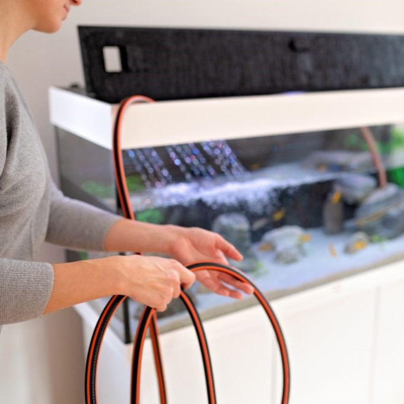

Há mais de 20 anos a Aquario Show está presente no mercado de aquarismo em Belo Horizonte oferecendo sempre o melhor atendimento e produtos de qualidade.
|  AQUARIOS DE ÁGUA DOCE |  AQUARIOS MARINHOS |  LAGOS DE JARDINS |  PRODUTOS PARA MANUTENÇAO |
|---|---|---|---|
| Temos uma farta variedade de espécies de peixes de água doce, além de rações, equipamentos, sistema de filtragem, sistema de iluminação e acessórios diversos. | Tudo em produtos para aquarismo de água salgada. Suplementos, acessórios, iluminação e filtragem, aquários completos, peixes, corais, invertebrados e muito mais. | Temos um vasto know-how em projeto, execução, implantação, manutenção e acompanhamento de lagos artificiais. | Filtros, rações, luminarias, testes e muito mais. |
Quando você compra um peixe ornamental, você está comprando um ser vivo. Para que ele possa chegar com saúde até você, a Kauar segue protocolos bem rígidos que garantem a sobrevivência dos animais ao longo de todo o trânsito.
especialistas no preparo e envio de peixes ornamentais a longas distâncias. Os peixes são selecionados e preparados para envio sempre sob a supervisão de nosso médico veterinário.
Todos os itens de nossa embalagem foram cuidadosamente escolhidos para garantir total segurança. Água e oxigênio são fornecidos na medida certa. E como medida de segurança e conforto extras, além da caixa de isopor, usamos também a de papelão.
Você sabia que a caixa de isopor, embora mantenha a temperatura, deixa passar muita luminosidade? Por isso, colocamos a caixa de isopor dentro da caixa de papelão. Isso contribui para escurecer o ambiente interno onde os peixes passarão as próximas horas, ampliando o conforto e auxiliando na redução do estresse de transporte. Essa medida ajuda também a manter a temperatura interna, uma vez que o papelão é um excelente isolante térmico.
ém de todos esses cuidados, trabalhamos apenas com transportadoras autorizadas para envio de cargas vivas. Isso significa, por exemplo, que você nunca receberá uma entrega de peixes Kauar pelos Correios, uma prática que é ilegal e expõe os animais a maus tratos (uma vez que o envio de organismos vivos pelos Correios é feita de forma clandestina, sem o conhecimento do próprio órgão).